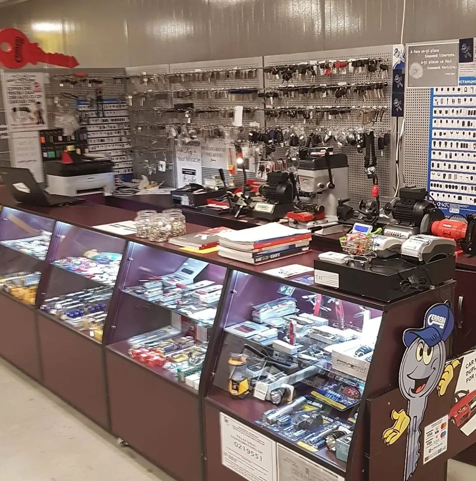
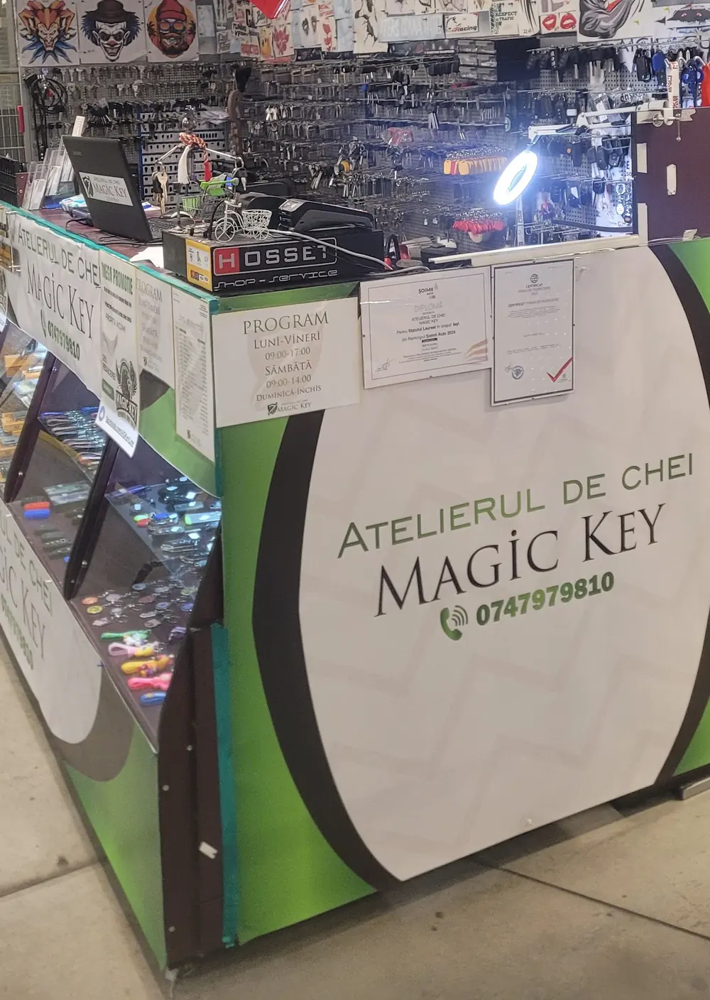

{{O cheie auto nouă, făcută repede și fără bătăi de cap — chiar și pentru cineva care a sunat fără să-i cunoască.|A new car key, done quickly and without hassle — even for someone who called out of the blue.|Uma chave de carro nova, feita depressa e sem complicações — mesmo para quem ligou sem conhecer.}}
{{cheie auto nouă|new car key|chave de carro nova}}
—
{{Cheie auto nouă, cu cip și telecomandă.|A new car key, chip and remote included.|Chave de carro nova, com chip e comando.}}
{{Atelierul de chei din Selgros Nicolina. Cheie în plus, cheie pierdută, telecomandă care nu mai deschide — spui marca și anul, noi îți spunem dacă se poate și cât costă.|The key workshop inside Selgros Nicolina. A spare key, a lost key, a remote that won’t unlock — tell us the make and year, we tell you if it can be done and the price.|A oficina de chaves dentro do Selgros Nicolina. Chave extra, chave perdida, comando que já não abre — diga a marca e o ano, dizemos se dá e quanto custa.}}
{{Sună · 0747 979 810|Call · 0747 979 810|Ligar · 0747 979 810}}
{{Cere o cheie|Ask for a key|Pedir uma chave}}
4,5{{pe Google · 53 de recenzii|on Google · 53 reviews|no Google · 53 avaliações}}
{{Apasă butoanele telecomenzii.|Press the remote’s buttons.|Carregue nos botões do comando.}}
{{Ce facem|What we do|O que fazemos}}
{{Chei auto, telecomenzi, porți și cartele.|Car keys, remotes, gates and fobs.|Chaves auto, comandos, portões e cartões.}}
{{Copiere și reparații, la tejgheaua din Selgros. Atinge un serviciu ca să scrii cererea.|Copies and repairs, at the counter in Selgros. Tap a service to write the request.|Cópias e reparações, no balcão do Selgros. Toque num serviço para escrever o pedido.}}
{{Lucrări recente|Recent work|Trabalhos recentes}}
{{Fiecare cheie, pozată lângă mașina ei.|Every key, photographed next to its car.|Cada chave, fotografada ao lado do seu carro.}}
4,5 · 53 {{de recenzii pe Google|Google reviews|avaliações no Google}}
{{Ce revine în recenzii.|What keeps coming up in reviews.|O que se repete nas avaliações.}}
{{Chei duplicat rezolvate rapid, la preț bun.|Duplicate keys sorted quickly, at a good price.|Chaves duplicadas resolvidas depressa, a bom preço.}}
{{duplicare chei|key copies|cópia de chaves}}{{O cheie de butuc greu de găsit: întâi la telefon, apoi „treci pe la mine să văd dacă am profilul” — și l-a avut.|A hard-to-find door cylinder key: first on the phone, then “drop by and I’ll check if I have the blank” — and he did.|Uma chave de canhão difícil: primeiro ao telefone, depois “passe cá para ver se tenho o perfil” — e tinha.}}
{{cheie de ușă|door key|chave de porta}}
{{Servicii|Services|Serviços}}
{{Ce se rezolvă la tejghea.|What gets done at the counter.|O que se resolve ao balcão.}}
{{Lista de pe bannerul atelierului, explicată. Prețul depinde de marcă, an și tipul cheii — îl afli la telefon.|The list from the workshop banner, explained. Price depends on make, year and key type — ask on the phone.|A lista do cartaz da oficina, explicada. O preço depende da marca, do ano e do tipo de chave — pergunte ao telefone.}}

{{Tejgheaua|The counter|O balcão}}
{{Sute de profile pe perete. Probabil și al tău.|Hundreds of blanks on the wall. Probably yours too.|Centenas de perfis na parede. Provavelmente o seu também.}}
{{Dacă nu ești sigur că există profilul cheii tale, sună întâi: îți spunem dacă merită drumul.|If you’re not sure your key’s blank exists, call first: we’ll tell you if the trip is worth it.|Se não tem a certeza de que o perfil da sua chave existe, ligue primeiro: dizemos se vale a viagem.}}
- {{Mărci auto|Car makes|Marcas}}{{Toyota, Jeep, Renault, Mercedes, Opel, VW, Citroën, SsangYong — din lucrările recente|Toyota, Jeep, Renault, Mercedes, Opel, VW, Citroën, SsangYong — from recent work|Toyota, Jeep, Renault, Mercedes, Opel, VW, Citroën, SsangYong — dos trabalhos recentes}}
- {{Lista completă|Full list|Lista completa}}{{de confirmat|to be confirmed|a confirmar}}
- {{Deplasare|Call-out|Deslocação}}{{de confirmat|to be confirmed|a confirmar}}
{{Lucrări|Recent work|Trabalhos}}
{{Opt mașini, opt chei.|Eight cars, eight keys.|Oito carros, oito chaves.}}
{{Fiecare cheie făcută aici e pozată lângă mașina ei, de obicei în parcarea Selgros.|Every key made here is photographed next to its car, usually in the Selgros car park.|Cada chave feita aqui é fotografada ao lado do carro, normalmente no parque do Selgros.}}
{{Cerere|Request|Pedido}}
{{Spune ce s-a pierdut.|Tell us what’s lost.|Diga o que se perdeu.}}
{{Marca, anul și ce chei mai ai — atât trebuie ca să-ți spunem dacă se poate și cât costă.|Make, year and which keys you still have — that’s all we need to say if it can be done and the price.|Marca, ano e que chaves ainda tem — é o que precisamos para dizer se dá e quanto custa.}}
{{Contact|Contact|Contactos}}
{{În Selgros, Nicolina 57A.|Inside Selgros, Nicolina 57A.|Dentro do Selgros, Nicolina 57A.}}
{{Intri în Selgros și cauți standul alb cu verde, cu cheia roșie mare atârnată deasupra.|Walk into Selgros and look for the white-and-green stand with the big red key hanging above it.|Entre no Selgros e procure o balcão branco e verde com a grande chave vermelha pendurada por cima.}}
- {{Telefon|Phone|Telefone}}0747 979 810
- {{Adresă|Address|Morada}}{{Incinta Selgros, Șos. Nicolina nr. 57A, 700711 Iași|Inside Selgros, Șos. Nicolina 57A, 700711 Iași|Dentro do Selgros, Șos. Nicolina 57A, 700711 Iași}}
- Plus Code4HJF+RW Iași
- {{Mesaj|Message|Mensagem}}
{{Program|Opening hours|Horário}}
